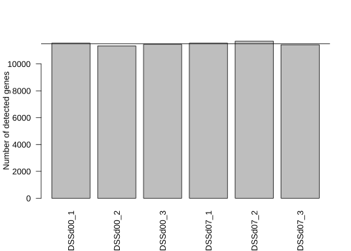

Set ~/RNAseq/labs/ as your working directory (i.e. your working directory should be the directory where you saved this .Rmd file). Create a subdirectory named data in this directory (~/RNAseq/labs/data/) for input and output files.
Data preprocessing is done in R. Load the necessary R packages and source the download function.
# plotting
library(DESeq2) # rna-seq
library(stringr)
library(rafalib) # nice plot arrangement
rafalib::mypar(mar=c(6,2.5,2.5,1)) #sets nice arrangement for the whole document
# source download function
source("https://raw.githubusercontent.com/NBISweden/workshop-RNAseq/master/assets/scripts.R")1 Preparation
The first step is some data wrangling and clean-up to prepare the data for analyses. Download the count table generated by featureCounts (named gene_counts_original.tsv in the repository) into the data subdirectory.
download_data("data/gene_counts_original.tsv")Download the metadata table.
download_data("data/metadata_original.csv")Read in the files to R.
co <- read.delim("data/gene_counts_original.tsv",
sep = "\t",
header = TRUE,
stringsAsFactors = FALSE,
comment.char = "#")
mo <- read.csv("data/metadata_original.csv",
header = TRUE)Inspect how the files look like.
head(co)
head(mo)## Geneid Chr
## 1 ENSMUSG00000102693 1
## 2 ENSMUSG00000064842 1
## 3 ENSMUSG00000051951 1;1;1;1;1;1;1
## 4 ENSMUSG00000102851 1
## 5 ENSMUSG00000103377 1
## 6 ENSMUSG00000104017 1
## Start
## 1 3073253
## 2 3102016
## 3 3205901;3206523;3213439;3213609;3214482;3421702;3670552
## 4 3252757
## 5 3365731
## 6 3375556
## End Strand Length
## 1 3074322 + 1070
## 2 3102125 + 110
## 3 3207317;3207317;3215632;3216344;3216968;3421901;3671498 -;-;-;-;-;-;- 6094
## 4 3253236 + 480
## 5 3368549 - 2819
## 6 3377788 - 2233
## hisat2_results.subset_1M_reads.KI_PC1606_01.bam
## 1 0
## 2 0
## 3 0
## 4 0
## 5 0
## 6 0
## hisat2_results.subset_1M_reads.KI_PC1606_02.bam
## 1 0
## 2 0
## 3 1
## 4 0
## 5 0
## 6 0
## hisat2_results.subset_1M_reads.KI_PC1606_03.bam
## 1 0
## 2 0
## 3 2
## 4 0
## 5 0
## 6 0
## hisat2_results.subset_1M_reads.KI_PC1606_13.bam
## 1 0
## 2 0
## 3 0
## 4 0
## 5 0
## 6 0
## hisat2_results.subset_1M_reads.KI_PC1606_14.bam
## 1 0
## 2 0
## 3 3
## 4 0
## 5 0
## 6 0
## hisat2_results.subset_1M_reads.KI_PC1606_15.bam
## 1 0
## 2 0
## 3 2
## 4 0
## 5 0
## 6 0
## SampleName SampleID No Model Day Group Replicate
## 1 DSSd00_1 KI_PC1606_01 1 DSS 0 day00 1
## 2 DSSd00_2 KI_PC1606_02 2 DSS 0 day00 2
## 3 DSSd00_3 KI_PC1606_03 3 DSS 0 day00 3
## 4 DSSd02_1 KI_PC1606_04 4 DSS 2 day02 1
## 5 DSSd02_2 KI_PC1606_05 5 DSS 2 day02 2
## 6 DSSd02_3 KI_PC1606_06 6 DSS 2 day02 3We need the count table to have only the counts (numeric data) with gene IDs as row names. And the metadata table must only include information for the samples that are in the count table. And in the same order.
cr <- co[,7:12]
rownames(cr) <- co$Geneid
colnames(cr) <- substr(colnames(cr),42,43)
mr <- mo[mo$No %in% as.integer(colnames(cr)),]
colnames(cr) <- mr$SampleName
rownames(mr) <- mr$SampleNameInspect the new count table and metadata table. Ensure that labels match.
head(cr)
mr
all.equal(colnames(cr),rownames(mr))## DSSd00_1 DSSd00_2 DSSd00_3 DSSd07_1 DSSd07_2 DSSd07_3
## ENSMUSG00000102693 0 0 0 0 0 0
## ENSMUSG00000064842 0 0 0 0 0 0
## ENSMUSG00000051951 0 1 2 0 3 2
## ENSMUSG00000102851 0 0 0 0 0 0
## ENSMUSG00000103377 0 0 0 0 0 0
## ENSMUSG00000104017 0 0 0 0 0 0
## SampleName SampleID No Model Day Group Replicate
## DSSd00_1 DSSd00_1 KI_PC1606_01 1 DSS 0 day00 1
## DSSd00_2 DSSd00_2 KI_PC1606_02 2 DSS 0 day00 2
## DSSd00_3 DSSd00_3 KI_PC1606_03 3 DSS 0 day00 3
## DSSd07_1 DSSd07_1 KI_PC1606_13 13 DSS 7 day07 1
## DSSd07_2 DSSd07_2 KI_PC1606_14 14 DSS 7 day07 2
## DSSd07_3 DSSd07_3 KI_PC1606_15 15 DSS 7 day07 3
## [1] TRUEFinally save the data in the data directory.
write.csv(cr,file="data/gene_counts_raw.csv",quote=FALSE)
write.csv(mr,file="data/metadata_raw.csv",quote=FALSE)2 Filtering
The next step is to remove samples and genes that are uninformative. We read in the count table (You can skip this step if continuing from the previous step).
download_data("data/gene_counts_raw.csv")
cr <- read.csv("data/gene_counts_raw.csv",
header = TRUE,
stringsAsFactors = FALSE,
row.names = 1)
head(cr)
str(cr)## DSSd00_1 DSSd00_2 DSSd00_3 DSSd07_1 DSSd07_2 DSSd07_3
## ENSMUSG00000102693 0 0 0 0 0 0
## ENSMUSG00000064842 0 0 0 0 0 0
## ENSMUSG00000051951 0 1 2 0 3 2
## ENSMUSG00000102851 0 0 0 0 0 0
## ENSMUSG00000103377 0 0 0 0 0 0
## ENSMUSG00000104017 0 0 0 0 0 0
## 'data.frame': 55487 obs. of 6 variables:
## $ DSSd00_1: int 0 0 0 0 0 0 0 0 0 0 ...
## $ DSSd00_2: int 0 0 1 0 0 0 0 0 0 0 ...
## $ DSSd00_3: int 0 0 2 0 0 0 0 0 0 0 ...
## $ DSSd07_1: int 0 0 0 0 0 0 0 0 0 0 ...
## $ DSSd07_2: int 0 0 3 0 0 0 0 0 0 0 ...
## $ DSSd07_3: int 0 0 2 0 0 0 0 0 0 0 ...The count data shows read counts across samples and genes. The columns denote samples and rows denote genes.
Read in the metadata (You can skip this step if continuing from the previous step). Each row corresponds to a sample.
download_data("data/metadata_raw.csv")
mr <- read.csv("data/metadata_raw.csv",
header = TRUE,
stringsAsFactors = FALSE,
row.names = 1)
head(mr)
str(mr)## SampleName SampleID No Model Day Group Replicate
## DSSd00_1 DSSd00_1 KI_PC1606_01 1 DSS 0 day00 1
## DSSd00_2 DSSd00_2 KI_PC1606_02 2 DSS 0 day00 2
## DSSd00_3 DSSd00_3 KI_PC1606_03 3 DSS 0 day00 3
## DSSd07_1 DSSd07_1 KI_PC1606_13 13 DSS 7 day07 1
## DSSd07_2 DSSd07_2 KI_PC1606_14 14 DSS 7 day07 2
## DSSd07_3 DSSd07_3 KI_PC1606_15 15 DSS 7 day07 3
## 'data.frame': 6 obs. of 7 variables:
## $ SampleName: chr "DSSd00_1" "DSSd00_2" "DSSd00_3" "DSSd07_1" ...
## $ SampleID : chr "KI_PC1606_01" "KI_PC1606_02" "KI_PC1606_03" "KI_PC1606_13" ...
## $ No : int 1 2 3 13 14 15
## $ Model : chr "DSS" "DSS" "DSS" "DSS" ...
## $ Day : int 0 0 0 7 7 7
## $ Group : chr "day00" "day00" "day00" "day07" ...
## $ Replicate : int 1 2 3 1 2 3The most relevant metadata columns are sampleName and Group. It is important to check that the number of columns of data match the number of rows of metadata. And that the column names of data match the row names of metadata.
all.equal(colnames(cr),rownames(mr))## [1] TRUELet’s visualise the distribution of counts using a boxplot and density plot.
rafalib::mypar(1,2,mar=c(6,3,3,2))
boxplot(log2(as.matrix(cr)+1),
ylab = expression('Log'[2]~'Read counts'), las=2, main="Raw data")
hist(log2(as.matrix(cr)+1),
ylab = "", las = 2, main = "Raw data")
par(mfrow=c(1,1))
On the boxplot, the median values are zero across all samples. This means that half the values in each sample are zeros. On the histogram, we see a huge peak of zeros. This data set would benefit from a low count filtering.
We can check if any samples need to be discarded based on the number of genes detected. We create a barplot of genes detected across samples.
barplot(colSums(cr>3), ylab = "Number of detected genes", las = 2)
abline(h = median(colSums(cr>3)))
On average, about 11502.00000 genes are detected. All samples are more or less close to the average. None of the samples look bad enough to be removed.
What does cr>3 do? Why did we use 3? Is it better than using cr>0?
And we can create a similar plot for detection rate across genes.
barplot(rowSums(cr>3), xlab = "Genes", ylab = "Number of samples", names.arg = "")
abline(h = median(rowSums(cr>3)), col="red")
This is hard to see. It’s perhaps easier to plot a histogram.
hist(rowSums(cr>3))There are a lot of genes that are not expressed (ie; zero on x-axis) in any sample. These can be removed completely. We are mostly interested in the peak on the right. These are genes that are expressed in all samples. We don’t want to be too stringent, so we will choose to keep genes that are expressed in at least 3 samples since our groups have 3 samples each.
Below, rather than using zero as the minimum value for detection, we used minimum of 5 reads in at least 3 samples (since each of test groups consist of 3 samples).
# remove genes with low counts
keep_genes <- rowSums( cr > 5 ) >= 3
cf <- cr[keep_genes,]How would the results change if we used total number of samples (ie; 6 for this dataset) in the code above? Are there any drawbacks to doing that?
Distribution of the filtered counts looks like below. Compare this to the previous boxplot above.
boxplot(log2(as.matrix(cf)+1),ylab=expression('Log'[2]~'Read counts'),las=2,main="Filtered data")In addition, compare the histogram of filtered counts below to the raw data above.
hist(rowSums(cf>3))The missingness in the data set is reduced. The filtering process has removed 44914 genes with low counts.
Since no samples were discarded, the metadata file will remain the same. And we can check that the labels are in the same order in counts and metadata.
all.equal(colnames(cf),rownames(mr))## [1] TRUEAt this point, we can save the filtered data.
write.csv(cf, "data/counts_filtered.csv", quote = F)3 Normalisation
The raw count data needs to be corrected for various biases before statistical inference. If the dataset is to be used in an R package for differential gene expression such as DESeq2, edgeR or Limma, you must provide the raw data directly. This is because, these packages handle the correction and transformation internally. In addition, these packages do not control for gene length. Therefore, for custom analyses and gene-to-gene comparison, the raw data needs to be normalised.
3.1 CPM/TPM
For analysis other than DGE, the data set must be corrected before use. The most basic correction required is sequencing depth. This is achieved using rescaling the counts to counts per 1 million (CPM).
download_data("data/counts_filtered.csv")
cf <- read.csv("data/counts_filtered.csv",
stringsAsFactors = F,
row.names = 1)
download_data("data/metadata_raw.csv")
if(!exists("mr")) mr <- read.csv("data/metadata_raw.csv",
stringsAsFactors=F,
row.names=1)
all.equal(colnames(cf),rownames(mr))## [1] TRUEcc <- t( t(cf) / colSums(cf) * 1e6 )
log2_cc <- log2( cc + 1 )
boxplot(log2_cc,ylab=expression('Log'[2]~'Read counts'),las=2,main="Log2 CPM")But, CPM data has some drawbacks. It is not suitable for within-sample comparisons. The total number of reads per sample varies from sample to sample. This also makes it harder to compare one experiment to another. In addition, gene length is not controlled for in this correction. RPKM/FPKM normalisations correct for gene length, but they are not recommended because they are not comparable between samples.
A better correction method that resolves sequencing depth and gene length is TPM (transcripts-per-million). The code for computing TPM is simple.
#' @title Compute TPM from a read count matrix
#' @param counts A numeric data.frame of read counts with samples (columns) and genes (rows).
#' @param len A vector of gene cds length equal to number of rows of dfr.
#'
#' https://support.bioconductor.org/p/91218/
#'
tpm <- function(counts,len) {
x <- counts/(len/1000)
return(t(t(x)*1e6/colSums(x)))
}We read in the gene length information.
co <- read.delim("data/gene_counts_original.tsv",
sep="\t",
header=TRUE,
stringsAsFactors=F,
comment.char="#")
g <- data.frame( ensembl_gene_id = co$Geneid ,
transcript_length = co$Length,
stringsAsFactors = F, row.names = co$Geneid)
g <- g[!duplicated(g$ensembl_gene_id),]Next, we find shared genes between count data and annotation data and match their order.
igenes <- intersect(rownames(cf),g$ensembl_gene_id)
g1 <- g[igenes,]
cf1 <- cf[igenes,]
all.equal(rownames(cf1),g1$ensembl_gene_id)## [1] TRUEAnd then we run the tpm() function on the count data using the gene lengths. And then we create a boxplot of the resulting values.
ct <- tpm(cf1,g1$transcript_length)
log2_ct <- log2( ct + 1 )
boxplot(log2_ct,ylab=expression('Log'[2]~'TPM'),las=2,main="Log2 TPM")
write.csv(ct,"data/counts_tpm.csv",quote=F)
This is the distribution of TPM counts.
3.2 DESeq2
DESeq2 internally corrects counts for sequencing depth and RNA compositional bias using Median of ratios method. The details of this method are described further in the DGE lab. To run this method, we create a DESeq2 object using the count data and metadata.
library(DESeq2)
mr$Group <- factor(mr$Group)
d <- DESeqDataSetFromMatrix(countData=cf,colData=mr,design=~Group)
d <- DESeq2::estimateSizeFactors(d,type="ratio")
cd <- counts(d,normalized=TRUE)
saveRDS(cd,"data/gene_counts_normalised_deseq2.Rds")cd <- readRDS("data/gene_counts_normalised_deseq2.Rds")
log2_cd <- log2(cd + 1)
boxplot(log2_cd,ylab=expression('Log'[2]~'Read counts'),las=2,main="DESeq2")3.3 VST
For the purpose of exploratory analysis such as MDS, PCA, clustering etc, VST (variance-stabilizing-transformation) is recommended. VST is also run using DESeq2. As in the previous step, a DESeq2 object is created.
library(DESeq2)
mr$Group <- factor(mr$Group)
d <- DESeqDataSetFromMatrix(countData=cf,colData=mr,design=~Group)
d <- DESeq2::estimateSizeFactors(d,type="ratio")
d <- DESeq2::estimateDispersions(d)
cv <- as.data.frame(assay(varianceStabilizingTransformation(d,blind=T)),check.names=F)
#write.csv(cv,"data/gene_counts_vst.csv",quote=FALSE)
boxplot(cv,ylab=expression('Log'[2]~'Read counts'),las=2,main="VST")The effect of VST transformation can be clearly seen in a mean vs variance plot.
rowVar <- function(x) apply(x,1,var)
rafalib::mypar(mfrow=c(3,2))
plot(log2(rowMeans(cf)),log2(rowVar(cf)),
xlab='Mean raw counts (log scale)',
ylab='Variance raw counts (log scale)',
main="Raw counts (filtered)",cex=.1)
plot(rowMeans(log2(cf +1)),rowVar(log2(cf +1)),
xlab='Mean log-transformed counts',
ylab='Variance log-transformed counts',
main="Log-transformed counts",cex=.1)
plot(rowMeans(log2_cc),rowVar(log2_cc),
xlab="Mean log CPM",
ylab='Variance log CPM',main="Log CPM",cex=.1)
plot(rowMeans(log2_ct),rowVar(log2_ct),
xlab="Mean log TPM",
ylab='Variance log TPM',main="Log TPM",cex=.1)
plot(rowMeans(log2_cd),rowVar(log2_cd),
xlab='Mean DESeq2',ylab='Variance DESeq2',main="DESeq2",cex=.1)
plot(rowMeans(cv),rowVar(cv),
xlab='Mean VST-transformed',
ylab='Variance VST-transformed',main="VST",cex=.1)
rafalib::mypar(mar=c(6,2.5,2.5,1))
For RNA-seq data, as the mean count value increases, the variance increases. There is a strong almost linear relationship as seen in the figures. The statistical methods such as PCA expects similar variance across the range of mean values. If not, the higher variance genes will contribute more than the lower variance genes. Such data is said to be heteroscedastic and needs to be corrected. One option is log transformation (with pseudocount), but this tends to inflate the contribution of the low variance genes. To obtain similar variance across the whole range of mean values, DESeq2 offers two methods VST (variance stabilising transformation) and RLOG (regularised log transformation).
As the name suggests, VST transformation stabilizes variance across the whole range of count values. VST is recommended for clustering or visualisation. It is not intended for differential gene expression. If the size factors vary dramatically between samples, then RLOG transformation is recommended. A comparable approach is voom transformation from the R package limma.
3.4 Conclusion
Finally, we can compare all of the various transformations in a single plot.
rafalib::mypar(1,4,mar=c(6,2.5,2.5,1) )
boxplot(as.matrix(log2(cc+1)),ylab=expression('Log'[2]~'Read counts'),las=2,main="Log CPM", ylim = c(0,16))
boxplot(as.matrix(log2(ct+1)),ylab=expression('Log'[2]~'Read counts'),las=2,main="Log TPM", ylim = c(0,16))
boxplot(as.matrix(log2(cd+1)),ylab=expression('Log'[2]~'Read counts'),las=2,main="DESeq2", ylim = c(0,16))
boxplot(as.matrix(cv),ylab=expression('Log'[2]~'Read counts'),las=2,main="VST", ylim = c(0,16))
rafalib::mypar(mar=c(6,2.5,2.5,1))At this point, we can save the filtered data.
# write.csv(cc,"data/counts_cpm.csv",quote=F)
write.csv(ct,"data/counts_tpm.csv",quote=F)
# write.csv(cd,"data/counts_deseq2.csv",quote=F)
# write.csv(cv,"data/counts_vst.csv",quote=F)Would it be possible to have one perfect normalisation method for all types of analyses? Is there any drawback to using gene length corrected counts in differential gene expression analyses?